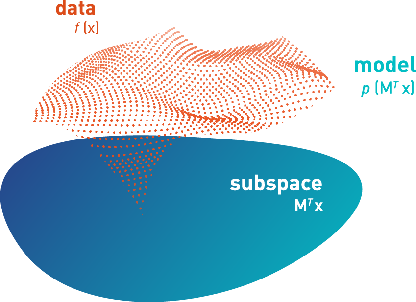

PAPERS
The research behind the equadratures project spans numerous topics
ranging from applied mathematics to Bayesian inference, and
computational simulation techniques. Of late we are particularly
interested in high-dimensional approximation, stochastic inference,
and numerical integration for complex multivariate distributions. Do
check out some of our research outputs below; clicking each
publication's card will take you to its pre-print.
